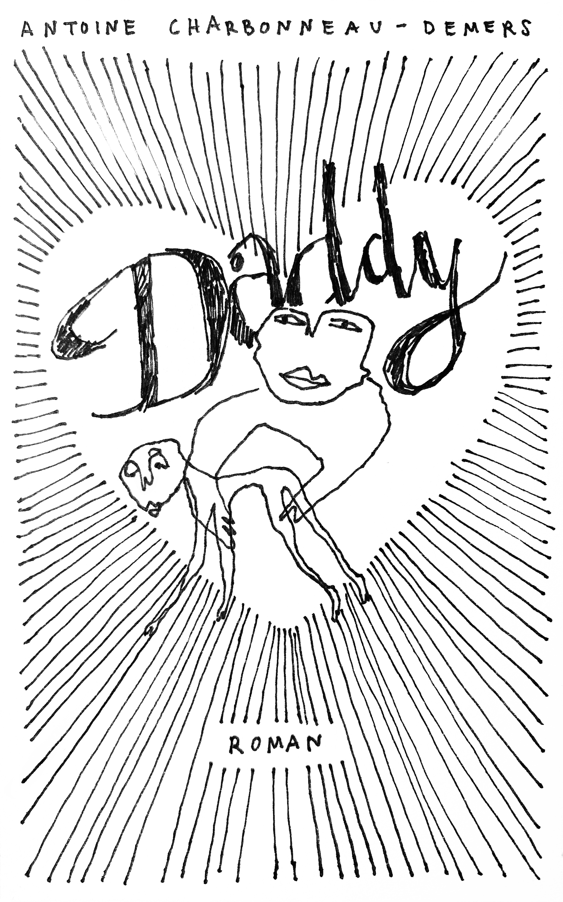
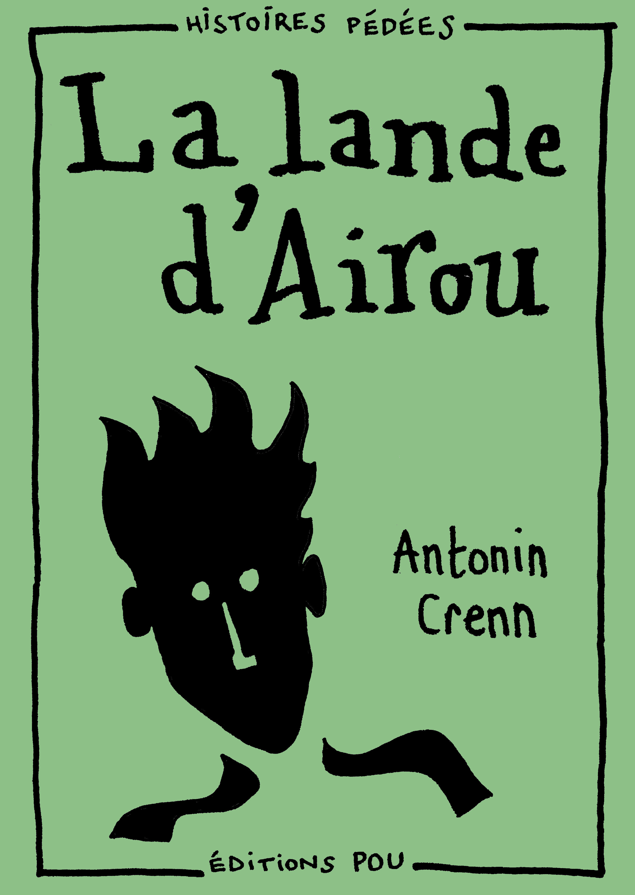
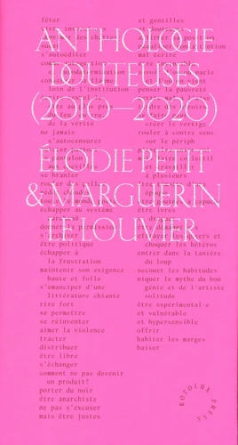

Des publications d’un autre genre ?
mars 2021
Il y a quelques semaines tout juste, est apparu dans nos librairies un texte très long, très gros et très fatiguant qu’il n’est pas nécessaire de nommer. Disons seulement qu’il parle de sexe, de sexe homosexuel et qu’il bénéficie d’un traitement médiatique favorable, quoique cela ne se traduise pas forcément par des ventes. Le léger agacement que peut produire cette publication m’a semblé une bonne occasion pour parler en bien d’autres publications.
un daddy sur internet

Un peu après nos enfermements collectifs à plusieurs endroits du globe a surgi sur nos réseaux Daddy. L’auteur, Antoine Charbonneau-Desmers, partage le lancement de ce texte sur Instagram et Facebook. L’image, qui sert tout à la fois de couverture, de titre et de vignette, semble familière à ceux qui suivent déjà Antoine et l’ont vu posté d’autres dessins qui y ressemblent. Via un lien, (ici) on peut facilement payer - le prix minimum est de 2 dollars canadiens, le prix suggéré de 7 - puis télécharger le pdf. Voilà pour la manière. Pour le fond, disons rapidement qu’il s’agit de la relation entre un homme jeune et un homme plus vieux, qu’ils n’ont pas grand chose en commun, qu’ils aiment coucher ensemble mais seulement d’une certaine façon. Peu importe à vrai dire, ce qui nous intéresse, c’est cet auteur-narrateur qui se refuse à l’être tout à fait. Daddy, c’est l’autofiction cheap, le mauvais sexe et la « semence guérisseuse », l’IST qui peine à devenir littérature. Le narrateur aimerait bien pourtant, avoir des amants qui lisent des livres, parler de sexe à son éditeur et de son éditeur à ses lecteurs :
Je repense à tout ce que la COVID-19 a tué avec la solitude qu’elle impose : mon indépendance, ma dignité, mes amies, ma famille, ma vie sexuelle, mes prochains livres, ma carrière en France ; moi qui voulais devenir un écrivain français, qui projetais de n’écrire que la vérité…
du sexe tout juste agrafé

Même saison, autre projet, au début de 2020 le Collectif Pou a lancé une petite collection intitulée « Histoires pédés ». Chaque saison, financée par collecte, propose quatre courts récits franchement pornographiques. Pour se les procurer, un rapide et modique paiement en ligne (juste là) puis un mail et l’on reçoit chez soi par La Poste un ou plusieurs de ces exemplaires simplement agrafés. La Lande d’Airou, par exemple, d’Antonin Crenn, propose une escapade ferroviaire aussi naïve que réjouissante et inattendue. Pas de jeu avec la fiction ici, mais juste la furieuse envie de toucher le corps de l’autre avec son accord et en établir la cartographie :
d’où pouvait bien sortir Henri, de quel paysage il s’était extrait avant de grimper dans mon train. Sur quelles terres il avait passé les heures qui avaient précédé notre amour, et sous quels cieux habitait l’être qui avait marqué sa peau d’un baiser.
dix ans de rencontres interlopes
Enfin, la semaine dernière a vu naître une publication délicieuse : l’Anthologie douteuses (2010-2020). Délicieuse parce qu’elle a juste ce qu’on aime de mauvais goût : du rose, des paillettes marquées à chaud pour le titre, un gaufrage enrobée dans une jaquette rose. L’Anthologie réunit dix ans de textes parus en fanzine, photocopies et autres supports tout aussi douteux que les textes qu’il contenaient. Confusion des genres oblige, on y trouve de la poésie, des récits, de la théorie, et surtout des corps de partout, toutes les parties du corps, du sec et du gras autant que du sec et du mouillé. Bien sûr, ces textes sont indissociables de leur présent d’énonciation, de la manière dont ils ont circulé, des échanges qu’ils ont provoqués, des mains par lesquelles ils ont passé, ces mêmes mains qui ont peut-être, quelques heures après avoir ouverts le livre ont ouvert des jambes, caressé, sucé.

Cette anthologie est une archive. Elle est le reflet d’une trajectoire intime et collective. Elle est donc indissociable du temps des luttes, du temps du sexe, du temps de l’art.
On est heureux, malgré le transfert du zine au livre, de tenir cette anthologie entre nos mains. Ce qu’elle perd très légèrement en spontanéité, elle le gagne définitivement en beauté de mise en page et de composition, en beauté de ce que la somme et la mise en commun provoquent, en beauté de l’expérience heureuse d’avoir été vécue. Point de récupération ou d’institutionnalisation ici, les éditions douteuses d’Elodie Petit et Marguerin Le Louvier, le sont toujours autant sous le toit de Rotolux Press.
du sexe entre les mains
Qu’ont en commun ces publications ? Sans doute un goût pour le bricolage, le vite-fait, pour le dessin plutôt que la photo, pour le lettrage plutôt que la typographie. Elles sont forts différentes pourtant : pas les mêmes générations, pas les mêmes conceptions de ce qu’homosexuel veut dire, pas le même sexe, pas les mêmes politiques. Ce sont cependant toutes des tentatives incomplètes et ébauchées de rendre nos publications queer. Des publications obliques (à la manière de Sara Ahmed), qui ne suivent pas les lignes éditoriales. Il y aurait peut-être bien des éditions straight.
Une analogie entre les livres et nos corps, qui l’eût cru ? Laissons à l’éditeur pignon-sur-rue le mauvais sexe et les préjugés, à nous l’agrafeuse et la piraterie éditoriale, la maîtrise de notre consentement et de notre copyright, le plaisir de faire les choses de nos propres mains; à nous l’inconnu, le grand frisson, la tendresse aussi.